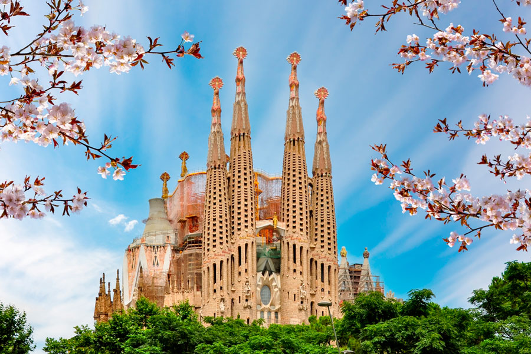
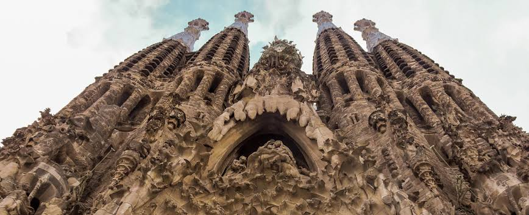
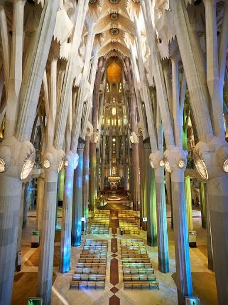

La historia del Templo Expiatorio de la Sagrada Familia en Barcelona comenzó en 1882, impulsada por Josep Maria Bocabella y la Asociación Espiritual de Devotos de San José. Inicialmente, el arquitecto Francisco de Paula del Villar diseñó un templo de estilo neogótico convencional, pero renunció apenas un año después por discrepancias con la junta. En 1883, Antoni Gaudí asumió la dirección del proyecto y replanteó por completo la obra con una visión monumental sin precedentes. Gaudí fusionó formas orgánicas de la naturaleza con una profunda simbología cristiana, concibiendo el templo como un "bosque de piedra". Dedicó 43 años de su vida a esta genial estructura hasta su trágica muerte en 1926, dejando terminadas únicamente la cripta, el ábside y la fachada del Nacimiento.



Tras el fallecimiento de Gaudí, las obras continuaron de manera intermitente, sufriendo un grave revés durante la Guerra Civil española, cuando un incendio destruyó los planos, maquetas y el taller del arquitecto en la cripta. A partir de la década de 1950, destacados arquitectos lograron retomar la construcción interpretando los modelos originales de Gaudí. La célebre basílica, financiada exclusivamente mediante donaciones privadas y la venta de entradas, fue declarada Patrimonio de la Humanidad por la UNESCO en 2005 y consagrada al culto por el papa Benedicto XVI en 2010. En el año 2026, coincidiendo con el centenario de la muerte de Gaudí, el templo alcanzó su altura definitiva con la finalización de sus torres principales, consolidándose como la obra cumbre del modernismo catalán.